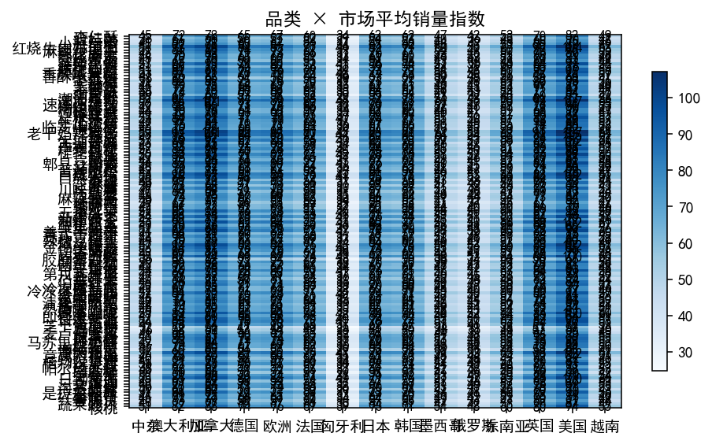
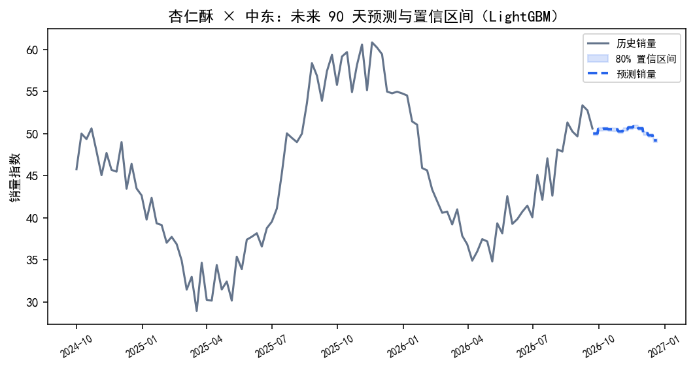
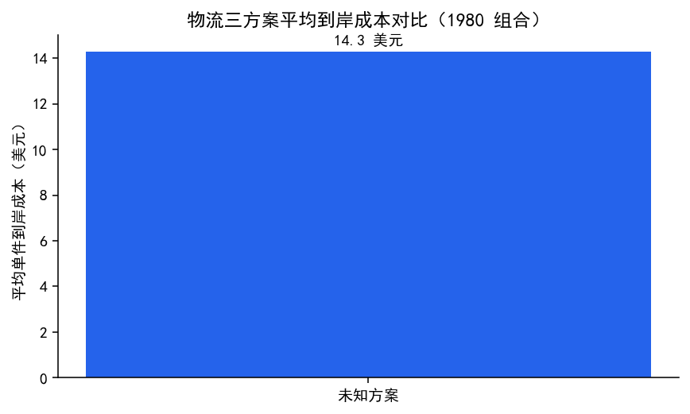
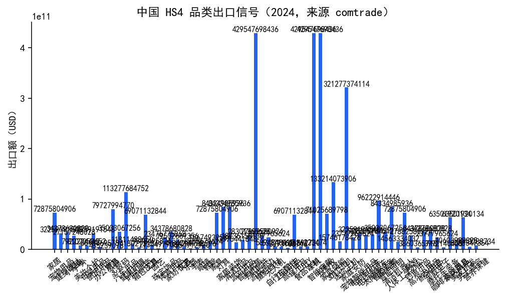
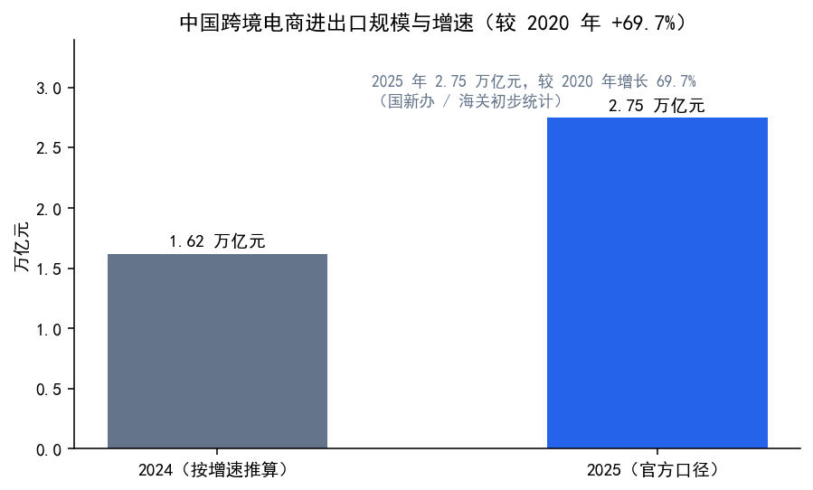
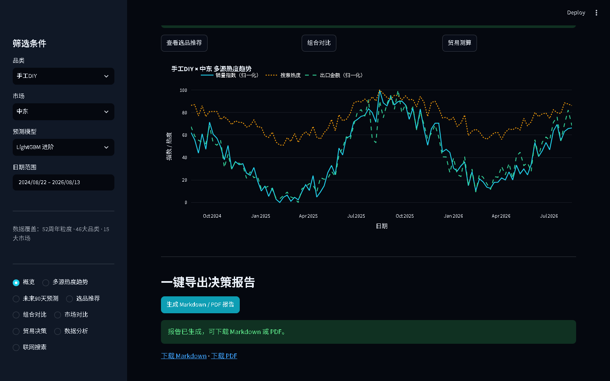

面向中小跨境卖家的贸易决策智能：用多源信号回答「卖什么、卖到哪、怎么卖、是否值得卖」。 覆盖 132 个食品 SKU × 15 个市场 = 1,980 个组合， 输出三模型预测、六维评分与 Go / No-Go 判定。
所有规模数字均由 src/config.py 的品类目录派生，不硬编码；下表为当前仓库的实际口径。
| 项目 | 口径 | 说明 |
|---|---|---|
| 品类 | 132 个食品 SKU | 分属 12 大类：谷物主食 / 肉禽蛋奶 / 海鲜水产 / 果蔬 / 零食 / 坚果果干 / 调味酱料 / 饮料 / 烘焙 / 方便速食 / 保健 / 素食 |
| 市场 | 15 个 | us / eu / sea / jp / ca / au / uk / kr / de / fr / vn / ru / hu / ae / mx |
| 组合 | 1,980 | 品类 × 市场 |
| 历史面板 | 205,920 行 | 1,980 组合 × 104 周（2024-10-01 → 2026-09-22） |
| 对照组 | train 182,160 / holdout 23,760 | 1,980 组合 × 92 / 12 周，测试格 23,760 |
| 预测产物 | 356,400 条 | 1,980 组合 × 90 天 × 2 模型 |
单进程统一后端同时提供 REST API、React 前端、MCP Server 与受管后台任务；预测、推荐、贸易决策共享同一份数据口径。
合成时序面板 + 真实信号层（Google Trends、平台榜单、UN Comtrade 海关、Wikimedia 爬虫、Open Food Facts），统一归一化为 date / category / market 长表。
Prophet 基线、LightGBM 进阶、StatsForecast 第三基线并行；逐组合回测与区间估计，指标逐条落盘可核对。
三模型对照六维评分（需求 / 趋势 / 竞争 / 毛利 / 合规 / 证据）+ Go / Conditional / No-Go 判定，叠加政策、物流、IP、CBAM 与融资就绪。
可解释裁决FastAPI 统一入口：/api/analyze、/api/recommendations、/api/trade/decision、/mcp，含数据新鲜度闸门。
以下图表由 scripts/run_data_analysis.py 在 1,980 组合口径下自动生成。






仓库不含运行期产物（output/、models/*.csv、data/processed/），克隆后按下列步骤再生成。
# 1. 环境 python -m venv .venv .venv\Scripts\python -m pip install -r requirements.txt # 2. 数据 → 清洗 → 训练 → 预测 → 推荐 .venv\Scripts\python scripts\run_pipeline.py # 3. 统一后端（REST API + React 前端 + MCP + 后台任务） .venv\Scripts\python scripts\run_api.py # 打开 http://127.0.0.1:8000/app # 4. 数据分析报告与图表 .venv\Scripts\python scripts\run_data_analysis.py
sales_volume 是生成的目标变量。
因此上表中的 MAPE 等指标衡量的是模型对生成过程的拟合能力，不代表真实市场预测精度。
真实信号层（Trends / 平台榜单 / Comtrade / 爬虫）已接入快照链路，但覆盖率与时效性受免费数据源限制。
对外引用任何精度数字前，请先核对 models/metrics.json 与 output/data_status.json 的实际值。
子页面为单文件离线前端，用于浏览界面与设计风格。
/api/* 请求在纯静态托管下会返回 404，
因此列表与图表可能为空。完整功能需在本地启动后端后访问 /app。